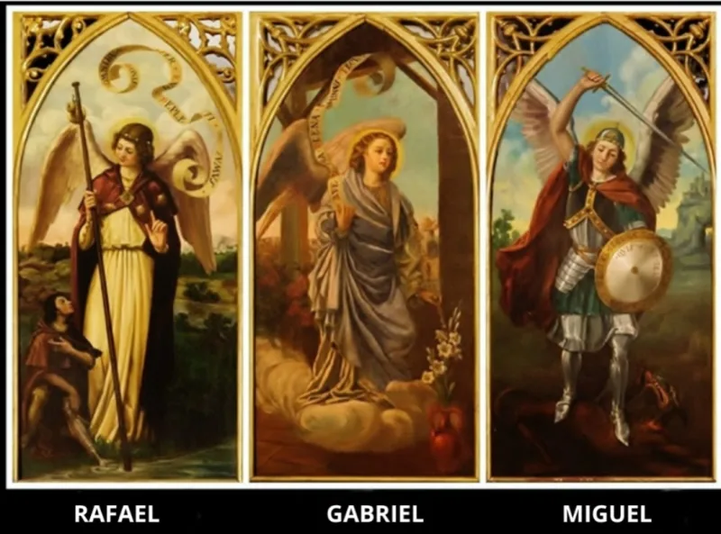

Enter your date of birth and find out who your guardian angel is.

Analyzing your response...0%
Amazing! Your guardian angel is the mighty archangel Saint Michael.
As the leader of the heavenly army, his song is the most powerful and can bring about financial miracles in as little as 24 hours. Listen to it now, for free.